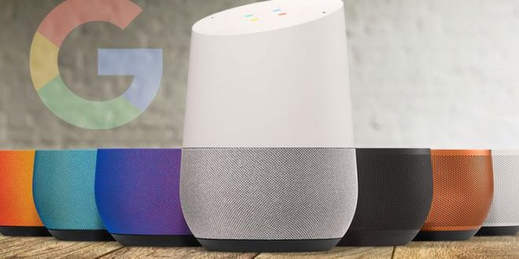

Le fait que Google Home soit conçu par le célèbre moteur de recherche lui permet d’obtenir de très bons résultats en réponse à des demandes nécessitant d’effectuer des recherches sur le web.
L’utilisation de Chromecast, relié à votre télévision s’avère particulièrement simple en combinaison avec Google Home.
Il vous suffit par exemple, de prononcer : « Ok Google, mets Adèle sur youtube » pour que votre télévision soit automatiquement allumée et le contenu demandé sur youtube diffusé. Vous pouvez tout aussi simplement lancer une série sur Netflix ou afficher vos albums photos stockés sur Google Photos.
Il est ainsi possible d’obtenir des réponses qui varient selon le locuteur. Par exemple : « Ok Google, fais sonner mon téléphone » fera sonner le téléphone de la personne qui aura effectué cette demande. De même pour : « Ok Google, qu’y a-t-il dans mon agenda aujourd’hui ? »
Même si c’est un affaire de goût, le design de Google Home plait en général davantage que celui de ses principaux concurrents. Discrète et élégante, Google Home s’intègre facilement dans tout type d’environnement.
